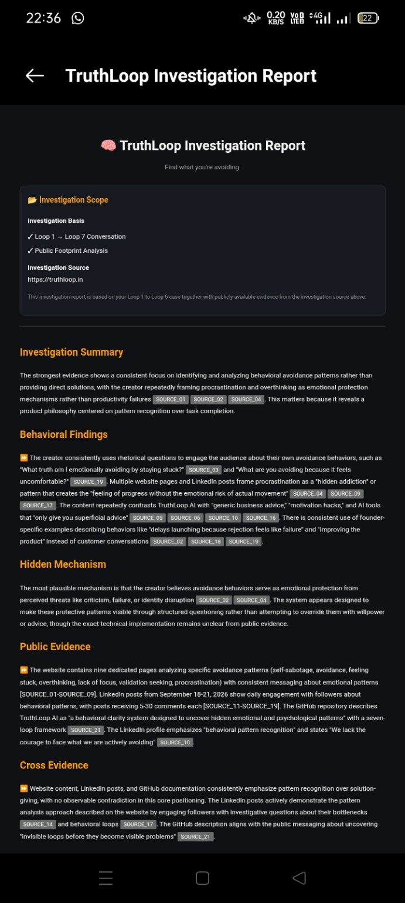
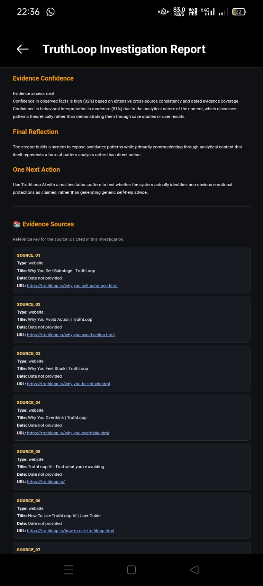
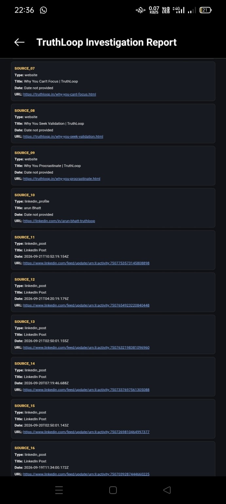
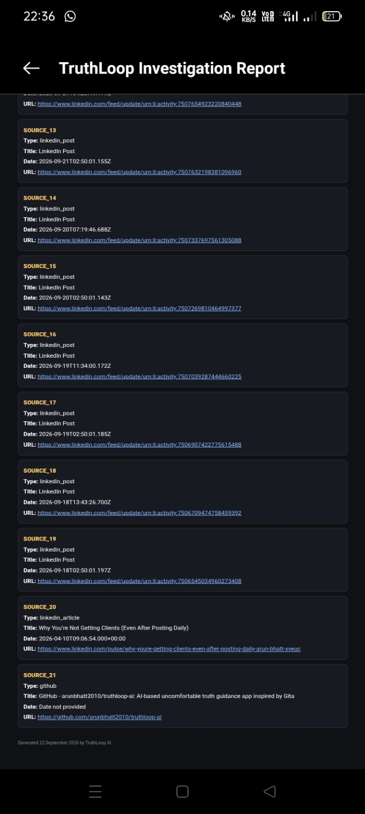

1. Direct investigation
Enter a public profile URL. TruthLoop examines accessible public information and generates a source-backed investigation report.
TruthLoop examines accessible public evidence across an individual's digital footprint, connects signals across sources, and creates a source-backed investigation report. Go deeper with an optional guided conversation when more context is needed.
TruthLoop is built for people who need to examine an individual's public footprint and understand what accessible evidence may reveal — from founders and business owners to investors, leaders and professionals.
Enter a public profile URL. TruthLoop examines accessible public information and generates a source-backed investigation report.
After reviewing the first report, continue with the optional Loop 1–6 conversation. Loop 7 can then combine the earlier report, your conversation and new findings.
Review source references, cross-source analysis and evidence confidence. The report is designed to be examined, not accepted as an opaque AI verdict.
Different platforms expose different kinds and amounts of public information. These are maximum capabilities, not guaranteed source counts.
Up to 10 sources
Coverage depends on accessible profile information and public content.
Up to 6 source links
Coverage depends on accessible profile information and linked public content.
Repository metadata
Investigation can use available repository metadata.
Up to 25 trackable sources
Possible when accessible references connect platforms and websites; not guaranteed.
The direct public-profile report is the starting point. If you want to add your own context or explore findings more deeply, continue through Loop 1–6 and return to Loop 7.
Describe the situation or question you want to examine.
Explore the recurring signals and tensions behind the situation.
Examine what the current pattern may be helping you avoid or preserve.
Consider the practical consequences of the pattern.
Look at the decision from a different perspective.
Clarify what observable signals could help test the interpretation.
Loop 7 uses the earlier public-profile investigation together with the Loop 1–6 conversation and newly surfaced findings to generate a deeper report.
The direct investigation report presents findings from accessible public evidence. The enhanced Loop 7 report can add the context and new findings from the guided conversation.




When public evidence, the conversation, and external signals align, TruthLoop does not need to manufacture a contradiction. The investigation can simply show the pattern, its protection mechanism, its observable cost, and what evidence supports the interpretation.
Review the report scope and evidence before deciding whether you want to go deeper with the optional guided investigation.
For users paying from India.
For users paying from outside India.
The applicable regional price is shown at checkout. Payment unlocks the completed report for download. The optional deeper investigation is explained after the first report.
TruthLoop is not limited to one profession or industry. It can support different investigation contexts for people who need to examine public profiles and understand the evidence available.
Examine public footprints, work history and observable signals around people and ventures.
Explore publicly available information relevant to leadership, partnerships and business decisions.
Review accessible public evidence when evaluating founders, teams or companies.
Investigate public profiles and evidence relevant to work, collaboration and important decisions.
Froggy helps users in real time throughout the investigation journey — from getting started to navigating each stage and understanding what to do next.
These internal links are selected from the current sitemap so the landing page connects the product journey to the site's strongest pattern, decision, execution, and self-audit content.
TruthLoop is not therapy, does not diagnose mental health conditions, and is not a substitute for professional or crisis support. It focuses on patterns visible in the conversation and, where provided, public evidence.
Start with a direct investigation report. If you want more context, continue with the optional Loop 1–6 conversation and return to Loop 7 for a deeper investigation.
Investigate a Public Profile →Not Answers. Patterns. Follow our journey.